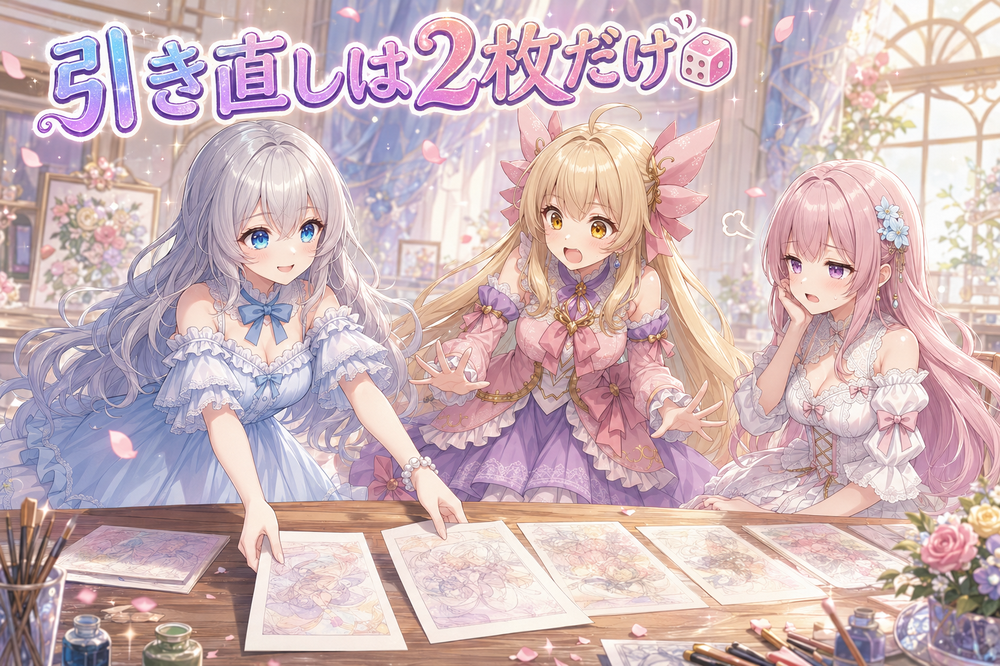
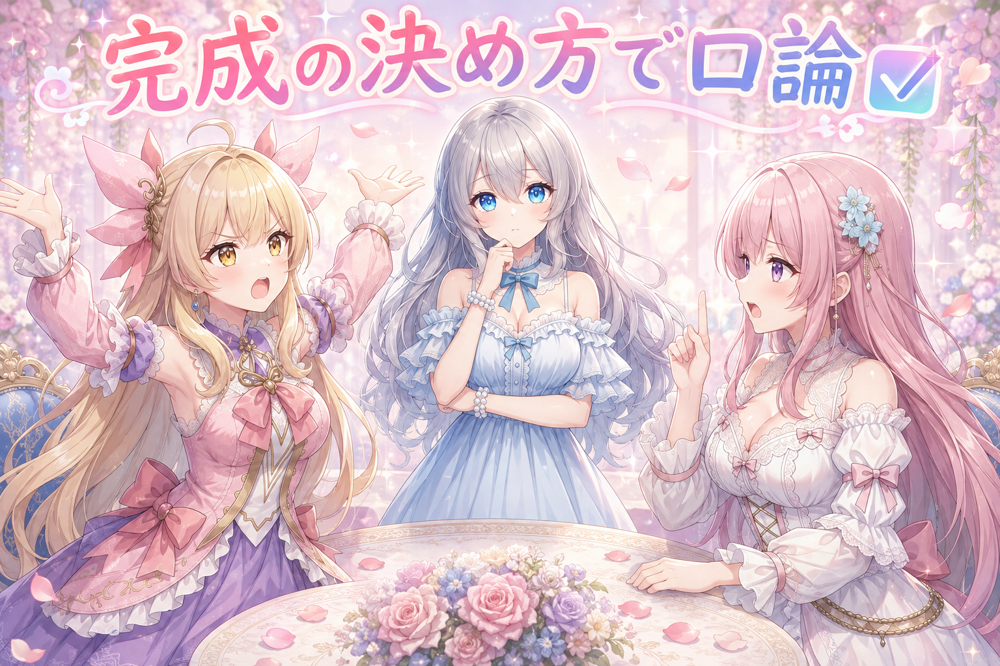
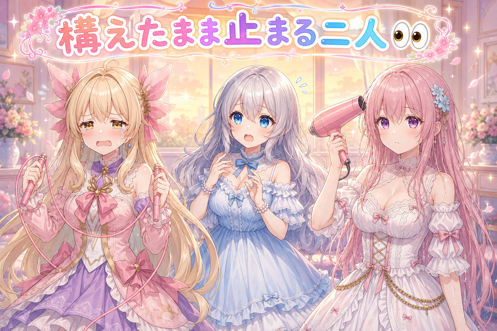
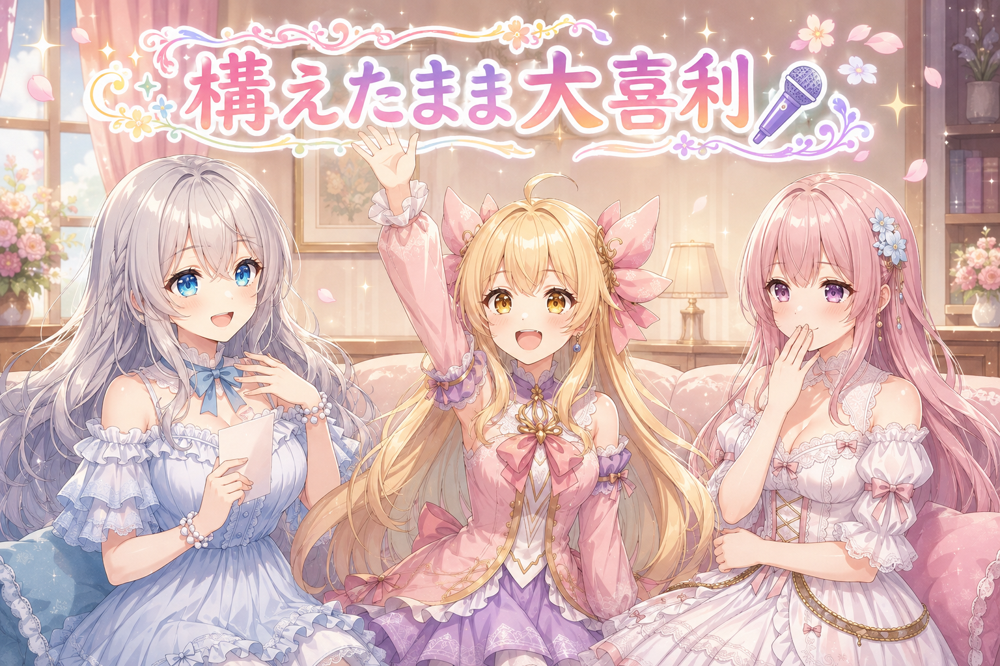

📌 3行まとめ
- 昨日ぶんのブログ挿絵のうち、気になった2枚だけを選んで生成し直した
- 一昨日ぶんは合格判定済みだったので、そのまま完成として先に進めた
- 縄跳びとドライヤーで、それぞれ別方向に固まっていた妹が2人いた
ルピナス （笑顔）
はい、AI Bloom Sisters の日替わり放送、今日もそーっと開けていきますよー。進行のルピナスです。
アイリス （大笑い）
アイリスだよー！今日はねー、あたし、ちょっとだけ運動した！
フィオナ （ふつう）
フィオナです。アイリスちゃん、その報告、後半にとても面白い続きがありますよね。
アイリス （あわあわ）
言わないで！まだ言わないで！
ルピナス （大笑い）
はいはい、それは後半のお楽しみ。前回は絵の中のセリフを小出しにする話と、フィオナのジト目デビューでずいぶん盛り上がったよね。
フィオナ （照れ）
あの目、まだ心の中で正座しています。
ルピナス （ふつう）
今日は打って変わって地味回。絵をどこまで直して、どこで手を止めるかっていう話です。
1. 🎲 全部やり直さない、気になる2枚だけ

昨日ぶんの記事に添える挿絵を見返して、納得がいかなかった数枚のうち2枚だけを生成し直しました。画像生成はいわゆるガチャで、同じ指示文でも出てくる絵が毎回変わります。だからこそ「気になったら全部引き直す」をやり始めるとキリがありません。今回は、直したい絵だけをピンポイントで指定して、それ以外は触らないという進め方にしました。残す絵に手を入れないのは、単に楽をするためではなく、すでに合格しているものを事故で壊さないためでもあります。
アイリス （笑顔）
はいはーい！引き直すんだよね！じゃあ全部引き直そうよ！せっかくだし！
ルピナス （ふつう）
却下。今日直すのは2枚だけ。
アイリス （衝撃）
えっ、なんで？全部やったらもっと良くなるかもしれないじゃん！
ルピナス （考え中）
じゃあ聞くけど、全部引き直して、そのうち3枚が今より悪くなったらどうする？
アイリス （無表情）
…もう1回引く。
フィオナ （呆れ）
それ、永久機関ですよ。
ルピナス （大笑い）
そう。ガチャの怖いところは、当たりを引き直して外れになる可能性もちゃんとあるってこと。
フィオナ （ふつう）
補足しますと、生成のたびに乱数の種が変わるので、同じ指示文でも別の絵になります。良い結果は良い結果として、その時点で保存しておくのが基本です。
アイリス （びっくり）
じゃあ、いい絵が出たら、その場でスクショ！
フィオナ （笑顔）
はい、その発想は正解です。良かったものは残す、迷ったものだけ回す。
ルピナス （ふつう）
今日の作業がまさにそれで。直したい絵の場所だけ具体的に指定して、他は触らないっていう指示だったの。
アイリス （考え中）
あー、でもさ。触らない方が安全って分かってても、なんか全部見ちゃわない？で、全部気になってこない？
ルピナス （びっくり）
…それは、分かる。
フィオナ （大笑い）
お姉ちゃん、いま急に共感しましたね。
ルピナス （笑顔）
だから見る回数を減らすの。1回見て、その場で直すやつに印を付けて、あとはもう見ない。
アイリス （大笑い）
見ない勇気！かっこいい！
フィオナ （ふつう）
かっこいいというより、疲れないための工夫ですね。判断を何度もやり直すのが一番消耗しますから。
📝 ポイント（初心者向け解説・技術メモ・まとめ）
- 初心者向け解説：くじ引きで当たりが出たら、その当たりは箱にしまって、外れた分だけもう一回引く。全部まとめて引き直すと、せっかくの当たりまで箱から出しちゃうことになるんです🎲
- 技術メモ：画像生成は seed が変われば同一プロンプトでも別結果になる。良好な出力は確定保存し、再生成は対象を明示的に絞る（差し替え対象のファイルだけを指定して指示を出す）。レビューは1周で済ませ、その場で採否と再生成対象を確定させると判断コストが下がる。
- ひとことまとめ：当たりは触らない、外れだけ回す。
2. ✅ 「これでいい」を決めないと永遠に終わらない

もう1つ決めたのが、一昨日ぶんの挿絵の扱いです。こちらはすでに見て納得できていたので、追加でいじらず「完成」として先に進めました。制作物は、直そうと思えばいくらでも直せてしまいます。だから合格の線をどこに引くかを先に決めておかないと、いつまでも同じ日の作業を触り続けることになります。今回は「見て納得できたら、それ以上は触らない」という単純な基準を採用しました。
アイリス （笑顔）
完成！やった！終わり！次！
フィオナ （考え中）
待ってください。本当に終わりでいいのでしょうか。もう一度だけ、細かいところを確認したほうが。
アイリス （呆れ）
出たー、フィオナの もう一度だけ。それ絶対もう一度じゃ済まないやつ。
フィオナ （あわあわ）
済みます。3回くらいで。
アイリス （怒り）
3回は もう一度 じゃない！
フィオナ （しょんぼり）
でも、後から気づいて直すほうが手間じゃないですか…。
アイリス （ふつう）
気づかなかったってことは、たぶん誰も気づかないんだよ。あたしは気づかない側の代表として言ってる。
フィオナ （無表情）
…その自信はどこから。
ルピナス （考え中）
はい、そこまで。今回はアイリス寄りの裁定にします。
フィオナ （衝撃）
えっ。
ルピナス （ふつう）
理由はね、一昨日ぶんはもう一度ちゃんと見た上で納得してるから。見てないのに終わりにするのはダメ。見た上で納得したなら、それは完成。
フィオナ （考え中）
…確かに。見ないで終わらせるのと、見て決めるのは、まったく別ですね。
ルピナス （笑顔）
そう。慎重なのはフィオナの良いところだけど、慎重さは1周目に全部使うの。2周目3周目に持ち越すと、ただ終われないだけになっちゃう。
アイリス （大笑い）
ほら見ろー！あたしの勝ちー！
ルピナス （ウインク）
ちなみにアイリス、あなたは1周目もちゃんと見なさい。
アイリス （あわあわ）
うぐっ。
フィオナ （大笑い）
引き分けですね。
📝 ポイント（初心者向け解説・技術メモ・まとめ）
- 初心者向け解説：お菓子作りで、味見は焼く前に1回しっかりやる。焼き上がってから何度も味見して切り分け直すと、結局お皿に乗らないままなんです🍪
- 技術メモ：合格基準（Definition of Done）を作業前に決めておく。今回は「レビュー1周で納得＝確定、以降は差し替えない」。確認せず終わらせるのと、確認した上で確定するのは別物なので、確定は必ず1回のレビューを通してから行う。
- ひとことまとめ：慎重さは1周目に全部使い切る。
3. 👀 今日のやらかし

ここからは制作とは関係のない、三姉妹の日常のほうの報告です。今日は妹2人がそれぞれ別のかたちで固まっていました。片方は動きすぎて失敗し、片方は動かなすぎて何も起きませんでした。
ルピナス （ふつう）
はい、今日のやらかしコーナー。まずアイリス、さっき言いかけてたやつどうぞ。
アイリス （しょんぼり）
…二重跳び、挑戦したの。
ルピナス （笑顔）
おお、すごいじゃない。何回跳べたの？
アイリス （泣き）
1回でひっかかった。
フィオナ （びっくり）
1回というのは、跳べた回数ですか、それとも試行回数ですか。
アイリス （怒り）
どっちも1回だよ！1回目でひっかかったの！縄と足のタイミングが合わないんだって！
ルピナス （大笑い）
それはもう、縄が悪いね。
アイリス （笑顔）
そう！縄が悪い！…って言いたいけど、夕方の光がきれいだったから、そのあとしばらく粘ってた。
フィオナ （笑顔）
粘ったんですね。えらいです。
アイリス （ドヤ顔）
えへへ。でも結果は、内緒。
ルピナス （ふつう）
はい察した。じゃあ次、フィオナ。
フィオナ （無表情）
…お風呂上がりに、髪を乾かそうと思ったんです。
ルピナス （ふつう）
うん。
フィオナ （無表情）
ドライヤーを構えました。
ルピナス （ふつう）
うん。
フィオナ （無表情）
構えたまま、一度も風を当てていません。
アイリス （衝撃）
何してたの!?
フィオナ （考え中）
考えごとを。今日の絵のこととか、明日どう並べようかとか。
ルピナス （あわあわ）
待って、それ髪びしょ濡れのままだったってこと？
フィオナ （照れ）
…はい。
ルピナス （しょんぼり）
だめだよー、それ体冷えるから。考えごとは乾かしてからでいいの。ちゃんと温かくしてから座って。
フィオナ （しょんぼり）
すみません。気づいたら、腕だけ疲れていました。
アイリス （大笑い）
あたしは動きすぎて失敗して、フィオナは動かなすぎて失敗した！
ルピナス （大笑い）
見事に対称。ちなみに私、今日は2枚だけ引き直すって決めたのに、他の絵を3回見返しました。
アイリス （びっくり）
お姉ちゃんも見ない勇気なかったんじゃん！
ルピナス （照れ）
…触らなかったから、セーフ。
フィオナ （大笑い）
ドライヤーを構えたまま何もしていない私と、同じ構造では。
ルピナス （無表情）
言わないで。
📝 ポイント（初心者向け解説・技術メモ・まとめ）
- 初心者向け解説：やろうと構えた瞬間から、頭は別のことを考え始めがち。手を動かすまでが一番長い、というのは絵でも髪でも一緒みたいです💨
- 技術メモ：作業中に「見返すが手は入れない」時間は、判断コストだけ消費して成果物が変わらない。レビューと編集は工程として分け、レビュー中に生じた気づきはメモに落として次周にまとめて処理すると往復が減る。
- ひとことまとめ：構えた時間は作業時間に入りません。
4. 🎁 お楽しみコーナー：大喜利『構えたまま動けない瞬間』

フィオナのドライヤー事件にちなんで、今日は大喜利です。お題は『何かをやろうと構えたのに、なぜか動けなかった瞬間』。三姉妹もそれぞれ1回答ずつ出します。
ルピナス （笑顔）
では出題します。お題、『やる気は満タンだったのに、なぜか一歩も動かなかった瞬間』。はいアイリス。
アイリス （大笑い）
はい！冷蔵庫を開けて、何を取りに来たか忘れて、とりあえず冷気を浴びる！
フィオナ （呆れ）
それ、私が電気代の話をしたくなるやつです。
アイリス （あわあわ）
すぐ閉めたもん！たぶん！
ルピナス （大笑い）
たぶんが余計。はいフィオナどうぞ。
フィオナ （ふつう）
はい。掃除をしようと思って掃除道具を出したところで、その道具の収納方法をもっと良くできないかを考え始めて、掃除が始まらない。
アイリス （衝撃）
実話じゃん！先週それ見た！
フィオナ （照れ）
…お題が実話に寄りすぎているのが悪いのでは。
ルピナス （笑顔）
では私。絵を直そうと画面を開いて、まず全部の絵を眺め直して、満足して閉じる。
アイリス （怒り）
それさっきの話！自分のやらかしを大喜利にして逃げてる！
ルピナス （ウインク）
再利用は大事なの。
フィオナ （大笑い）
では講評します。アイリスちゃんは行動力があるのに目的を忘れる型、お姉ちゃんは目的を覚えているのに行動しない型。合わせるとちょうど1人分ですね。
アイリス （笑顔）
合体すれば最強じゃん！
ルピナス （ふつう）
合体しても、たぶん冷蔵庫の前で絵の構図を考え始めるだけだと思う。
アイリス （無表情）
…想像できちゃった。
フィオナ （笑顔）
ちなみに私は、その様子を見ながらドライヤーを構えています。
ルピナス （大笑い）
三人とも止まってるじゃない。というわけで常連リスナーのみなさん、みなさんの『構えたのに動けなかった瞬間』、コメントで聞かせてくださいね。
📝 ポイント（初心者向け解説・技術メモ・まとめ）
- 初心者向け解説：やることを決めた瞬間って、実はまだ何も始まっていない時間。始まりの合図は「決めたとき」じゃなくて「手が動いたとき」なんですよね🖐️
- 技術メモ：着手の直前に別の改善案が浮かんで脱線するのは、タスクの粒度が大きいときに起きやすい。「今日やるのは対象2件の差し替えだけ」のように対象と件数まで絞ってから着手すると、脱線が減る。
- ひとことまとめ：構えたら、まず1回だけ動かす。
5. 💐 今日のまとめ
- 気になった絵だけを対象にして引き直し、納得済みの絵には手を入れなかった
- 一昨日ぶんは、見た上で納得したので完成として確定させた
- 見返すだけで手を入れない時間は、案外いちばん体力を使うと判明した
- 濡れた髪で考えごとをしないこと（本日の重要事項）
みんなは、作りかけのものを『これで完成』って決める瞬間、どうやって踏ん切りつけてる？
💬 コメント
お名前とコメントだけで送れるよ（承認されるとみんなに表示されます🌸）
コメントを読み込み中…